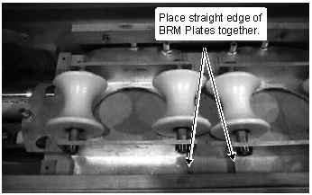
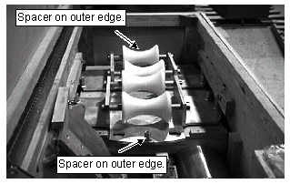
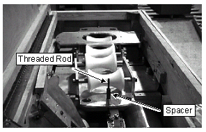
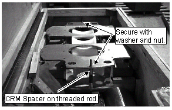
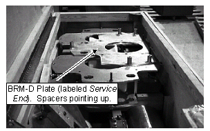
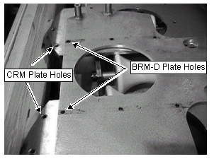
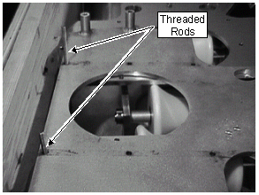
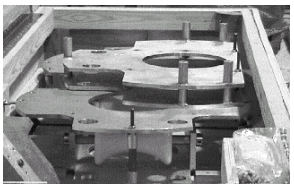

Operating Documentation
Direction 5133330-3, Rev# 14
Signa EXCITE HD 3.0T Service Methods
Module Version 1.0, Version Date 5/3/07
Operating Documentation |
| Required Persons | Preliminary Reqs | Procedure | Finalization |
|---|---|---|---|
| 1 |
This procedure describes the removal and replacement of the Twin Resonator Module (TRM) in systems with LCC, and WideOpen Enclosure Magnets. The TRM uses the BRM-D parts for installation/removal.
| NOTE: | There are 2 revisions of Gradient Insertion tools. The original kit (2164744) is used to replace a BRM coil. The upgraded kit (2164744-4) can be used to replace BRM, coils, CRM coils, BRM-D coils, and TRM coils. See Gradient Insertion Tool & Lift Kit for kit contents. |
| NOTE: | See TRM LCC Gradient ISO Install Kit for the tools
required from that kit. See Non-Magnetic Tools for a list of the non-magnetic tools required. |
| Item | Qty | Effectivity | Part# | Manufacturer | |
|---|---|---|---|---|---|
| Gradient Insertion Tool & Lift Kit | 1 | - | 2164744-4 | - | |
| BRM/BRM-D/CRM Cart | 1 | - | 2134810 | - | |
| Aluminum Cradle | 1 | - | 2134810-2 | - | |
| Cable Crimper/Stripper Kit | 1 | - | 2134776 | - | |
| Poron Seal, for air cover | 1 | - | 21851751 | - | |
| Poron Seal | 4 | - | 2181231 | - | |
| Poron Seal | 8 | - | 2181231-2 | - | |
| Red Loctite # 271 | 1 | - | 46-170686p3 | - | |
| Blue Loctite # 242 | 1 | - | 46-170684p2 | - | |
| Splice kit | 1 | - | 2241521 | - | |
| Certain tools from the TRM LCC Gradient ISO Install Kit (See | 1 | - | 2297692 | - | |
| Alcohol | 1 | - | - | - | |
| Ty-wraps | 5 | - | - | - | |
| Non-Magnetic Tools | 1 each | - | - | - | |
BRM plates with the rollers attached (spacers pointing up) are placed in the crate. See Illustration 1.
Illustration 1: PLACEMENT OF BRM PLATES

Install threaded rod through spacer on the outer edge of the BRM plate (see Illustration 2) and secure with washer and nut on bottom of BRM plate (see Illustration 3).
| NOTE: | Slide threaded rod with washer and nut attached on end through the bottom of the spacer. |
Illustration 2: BRM PLATE SPACER LOCATIONS

Illustration 3: THREADED ROD AND SPACER ATTACHED TO BRM PLATE

Install spacer on both threaded rods. See Illustration 3.
Install CRM plates (labeled 55cm Plate) onto BRM plates and rollers by placing CRM spacer on the threaded rod. See Illustration 4.
Illustration 4: PLACEMENT OF CRM PLATES

Place washer and nut on threaded rod and tighten to secure plates on both ends. See Illustration 4.
Place BRM-D plate labeled Service End on CRM plates (see Illustration 5). Line up holes on BRM-D plate and CRM plates (see Illustration 6).
| NOTE: | BRM-D Plate labeled Service End has the short spacers. |
Illustration 5: PLACEMENT OF BRM-D (SERVICE END) PLATE

Illustration 6: BRM-D PLATE ALIGNMENT

Move BRM-D plate to wall of crate with holes in Illustration 6 aligned.
Put washer and nut on one end of both threaded rods.
Underneath the CRM plates slide the threaded rods through the aligned holes of the CRM and BRM-D plates. See Illustration 7.
Illustration 7: PLACEMENT OF THREADED RODS IN CRM & BRM-D PLATES

| NOTE: | Allow the threaded rods to rest on the BRM plates while performing next step. |
Place the BRM-D plate, labeled Patient End, on top of the Service End BRM-D plate. Threaded rods will go through the same holes as on the Service End BRM-D plate. See Illustration 8.
Illustration 8: PLACEMENT OF THE PATIENT END BRM-D PLATE

Place washers and nuts on the threaded rods and secure both ends of rods to plates. Verify all threaded rods are fastened securely so plates do not move during shipping.
No finalization steps.